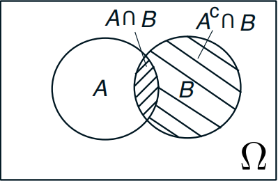
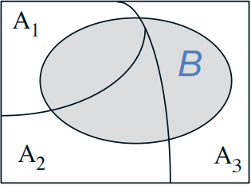

使用Rust实现朴素贝叶斯（Naive Bayes）算法
作者： 王江桐、周紫鹏
在讨论具体代码之前，首先让我们先了解一下相关概念。
条件概率分布
概率可以反映随机事件出现的可能性大小，而随机事件是指在相同条件下，可能出现也可能不出现的事件。条件概率则指，在某一随机事件已经发生的前提下，另一随机事件发生的概率，写作P(A | B)。如果用韦恩图表示，可以将事件A、B发生的概率表示如下：

当P(B) ≠ 0时，那么：
$$
P(A\ |\ B) = \frac{P(A\ ∩\ B)}{P(B)}
$$
当事件B的发生概率为0时，条件概率P(A | B)值为未定义。
当事件A与B完全独立时，P(A | B) = P(A)。
贝叶斯定理（Bayes Theorem）
有了上述等式以后，当我们得知事件B发生情况下，所有事件Ai的发生概率时，我们可以计算事件B的发生概率。例如：

事件B的概率计算如下：
$$
\begin{aligned}
P(B) =\ & \ \ \ \ \ P(A_1) \cdot P(B\ |\ A_1) \
&+ P(A_2) \cdot P(B\ |\ A_2) \
&+ P(A_3) \cdot P(B\ |\ A_3) \
\end{aligned}
$$
贝叶斯定理则在此二者基础上推论，当我们知道事件Ai的发生概率，以及事件B的条件概率，即当P(Ai)且P(B | Ai)已知时，我们可以计算事件Ai的条件概率，即P(Ai | B)：
$$
\begin{aligned}
P(A_i \ | \ B) &= \frac{P(A_i ∩ B)}{P(B)} \
&= \frac{P(A_i) \cdot P(B \ | \ A_i)}{P(B)} \
&= \frac{P(A_i) \cdot P(B \ | \ A_i)}{\sum_j^i P(A_j) \cdot P(B \ | \ A_j)} \
\end{aligned}
$$
朴素贝叶斯（Naive Bayes）与机器学习
对于贝叶斯定理，换个角度而言，事件A也可以看作是调查样本D的集合，Ai则是其中单独的一份样本，事件B则可以认为是某个结论，或某种分类结果，即假说H。因此，通过计算假说H成立时，样本出现的概率，即计算P(Di | Hj)，我们可以通过定理计算P(Hj | Di)，即在出现样本Di的情况下，假说H的j分支成立概率是多少。因此，当新样本Dx出现时，计算机可以通过贝叶斯定理计算，在出现该样本Dx的前提下，假说H所有分支j成立的概率。计算出这个概率之后，计算机可以选择最高概率的分支，并且预测新样本Dx属于该分支。
大致来说，这就是机器学习中的朴素贝叶斯模型。在给定样本集D的情况下，则：
$$
\begin{aligned}
P(H = j_1 \ | \ D_x) &= \frac{P(H = j_1 \ ∩ \ D_x)}{P(D_x)} = \frac{P(D_x \ | \ H = j_1) \cdot P(H = j_1)}{P(D_x)} \
P(H = j_2 \ | \ D_x) &= \frac{P(H = j_2 \ ∩ \ D_x)}{P(D_x)} = \frac{P(D_x \ | \ H = j_2) \cdot P(H = j_2)}{P(D_x)} \
... \
P(H = j_m \ | \ D_x) &= \frac{P(H = j_m \ ∩ \ D_x)}{P(D_x)} = \frac{P(D_x \ | \ H = j_m) \cdot P(H = j_m)}{P(D_x)} \
\end{aligned}
$$
因此，判定新样本Dx属于哪个分支，等同于计算P(Dx | H = j1) · P(H = j1)、P(Dx | H = j2) · P(H = j2)、...、P(Dx | H = jm) · P(H = jm)中的最大值。P(H = jm)与P(Dx | H = jm)的概率可以用样本中该分支出现的频率以及样本的条件概率模拟。不过，朴素贝叶斯模型依赖于一个大前提：每个样本的出现都是完全独立且随机的。如果它们并不是独立且随机的，概率模拟的准确程度就会受到影响，导致分类器结果更容易出现错误。
朴素贝叶斯分类器（Naive Bayes Classifier）的应用之一是垃圾邮件分类器。一个比较简单的垃圾邮件分类器的工作原理如下：
给定邮件数据集D，以及它们对应的二元标签值T。已知，当T = 0时，该邮件不是垃圾邮件，当T = 1时，该邮件是垃圾邮件。将邮件中所有出现的词，认为是该邮件的特征F。有了以上信息以后，我们可以模拟计算：
P(T)，即在这些邮件中，T = 1以及T = 0的概率；P(F | T)，即在这些邮件中，当邮件是垃圾邮件或非垃圾邮件时，某个特征出现的概率；- 当认为特征以及数据之间都是相互独立且随机的时候，
P(Fi ∩ Fj | T) = P(Fi | T) · P(Fj | T)。尽管在实际语言中，两个词语之间并非完全独立且随机出现，但是为了便利，暂且以这种方式计算。因此，可以计算P(Fj0 ∩ Fj1 ∩ Fj2 ∩ ... ∩ Fjn, Fji ∈ Dj | T)，即，判定邮件是垃圾邮件的情况下，该邮件Dj出现的概率，以及判定非垃圾邮件的情况下，该邮件出现的概率。
再一次，计算出以上信息以后，对于新邮件Dx，通过贝叶斯定理，我们可以模拟计算P(T | Dx)，即给定该邮件，是或不是垃圾邮件的概率，从而对其进行分类。不过，实际计算中，只需要计算P(Dx | T) · P(T)并进行比较，并不需要计算P(Dx)。
虽然如此，计算中仍然存在一个问题：如果邮件Dx中存在样本邮件中没有出现过的词汇，或是垃圾邮件/非垃圾邮件中未出现的词汇，那么P(F | T)的值为0，这会导致整个计算式的乘法结果为0。然而，我们并不能直接判定这个词汇可以直接决定该邮件的标记，因为我们并没有穷尽所有的样本。为了调整这个偏差，可以使用拉普拉斯平滑处理（Laplace Smoothing）来调整概率不为0。拉普拉斯平滑处理为，人为规定数值α，在计算概率时，在分子位置加上α，在分母位则加上2α。在很多场景中，α = 1。
使用Rust实现朴素贝叶斯分类器
对于给定邮件字符串集合以及它们对应的标记，首先我们需要将其转化成单独的词汇（Token），即获取邮件数据的特征，从而计算相应概率。相对更复杂一点的转换可以涉及词频甚至是词汇的大小写，不过如果只是写一个最基础的朴素贝叶斯分类器，也可以暂时先不考虑这些因素。本文中介绍的实现方法主要来自于《How to Implement a Naive Bayes Classifier with Rust》一文，文中，作者使用了Regex库，通过匹配正则表达式来解析词组。Regex库的具体介绍可见Rust Cook Book第18章，在此暂时不展开了。
解析之后，最原始的做法是，使用std::collections::HashSet存储所有的词汇，使用std::collections::HashMap存储词汇以及对应的概率。新建两个结构体如下：
#![allow(unused)] fn main() { // 单一邮件样本 pub struct Message<'a> { pub text: &'a str, pub is_spam: bool, } // 分类器 pub struct NaiveBayesClassifier { pub alpha: f64, pub tokens: HashSet<String>, pub token_ham_counts: HashMap<String, i32>, pub token_spam_counts: HashMap<String, i32>, pub spam_messages_count: i32, pub ham_messages_count: i32, } }
训练朴素贝叶斯分类器则相当于一一解析邮件样本，并且更新对应的数据，以便在预测新样本时进行计算。代码来自于同一篇文章中，摘录如下：
#![allow(unused)] fn main() { impl NaiveBayesClassifier { pub fn train(&mut self, messages: &[Message]) { for message in messages.iter() { self.increment_message_classifications_count(message); for token in tokenize(&message.text.to_lowercase()) { self.tokens.insert(token.to_string()); self.increment_token_count(token, message.is_spam) } } } fn increment_message_classifications_count(&mut self, message: &Message) { if message.is_spam { self.spam_messages_count += 1; } else { self.ham_messages_count += 1; } } fn increment_token_count(&mut self, token: &str, is_spam: bool) { if !self.token_spam_counts.contains_key(token) { self.token_spam_counts.insert(token.to_string(), 0); } if !self.token_ham_counts.contains_key(token) { self.token_ham_counts.insert(token.to_string(), 0); } if is_spam { self.increment_spam_count(token); } else { self.increment_ham_count(token); } } fn increment_spam_count(&mut self, token: &str) { *self.token_spam_counts.get_mut(token).unwrap() += 1; } fn increment_ham_count(&mut self, token: &str) { *self.token_ham_counts.get_mut(token).unwrap() += 1; } } }
预测时，套用上述公式，可以计算出P(Dx | T) · P(T)。在进行P(Fi ∩ Fj | T) = P(Fi | T) · P(Fj | T)计算时，由于概率大多都是小数，连续小数的乘积可能会导致精度丢失（Underflow）。因此，将乘积计算替换为对数计算，即：
$$
\begin{aligned}
P(F_0 \ ∩ \ F_1 \ ∩ \ ... \ ∩ \ F_n \ | \ T) &= P(F_0 \ | \ T) \cdot P(F_1 \ | \ T) \cdot \ ... \ \cdot P(F_n \ | \ T) \
&→ ln( \ P(F_0 \ | \ T)\cdot P(F_1 \ | \ T) \cdot \ ... \ \cdot P(F_n \ | \ T) \ ) \
&= ln(P(F_0 \ | \ T)) \ + \ ln(P(F_1 \ | \ T)) \ + \ ... \ + \ ln(P(F_n \ | \ T))
\end{aligned}
$$
对应的代码摘录如下：
#![allow(unused)] fn main() { impl NaiveBayesClassifier { pub fn predict(&self, text: &str) -> f64 { let lower_case_text = text.to_lowercase(); let message_tokens = tokenize(&lower_case_text); let (prob_if_spam, prob_if_ham) = self.probabilities_of_message(message_tokens); return prob_if_spam / (prob_if_spam + prob_if_ham); } fn probabilities_of_message(&self, message_tokens: HashSet<&str>) -> (f64, f64) { let mut log_prob_if_spam = 0.; let mut log_prob_if_ham = 0.; for token in self.tokens.iter() { let (prob_if_spam, prob_if_ham) = self.probabilites_of_token(&token); if message_tokens.contains(token.as_str()) { log_prob_if_spam += prob_if_spam.ln(); log_prob_if_ham += prob_if_ham.ln(); } else { log_prob_if_spam += (1. - prob_if_spam).ln(); log_prob_if_ham += (1. - prob_if_ham).ln(); } } let prob_if_spam = log_prob_if_spam.exp(); let prob_if_ham = log_prob_if_ham.exp(); return (prob_if_spam, prob_if_ham); } fn probabilites_of_token(&self, token: &str) -> (f64, f64) { let prob_of_token_spam = (self.token_spam_counts[token] as f64 + self.alpha) / (self.spam_messages_count as f64 + 2. * self.alpha); let prob_of_token_ham = (self.token_ham_counts[token] as f64 + self.alpha) / (self.ham_messages_count as f64 + 2. * self.alpha); return (prob_of_token_spam, prob_of_token_ham); } } }
最后，一个可能的测试样本：
#![allow(unused)] fn main() { // ...lib.rs pub fn new_classifier(alpha: f64) -> NaiveBayesClassifier { return NaiveBayesClassifier { alpha, tokens: HashSet::new(), token_ham_counts: HashMap::new(), token_spam_counts: HashMap::new(), spam_messages_count: 0, ham_messages_count: 0, }; } #[cfg(test)] mod tests { use super::*; #[test] fn naive_bayes() { let train_messages = [ Message { text: "Free Bitcoin viagra XXX christmas deals 😻😻😻", is_spam: true, }, Message { text: "My dear Granddaughter, please explain Bitcoin over Christmas dinner", is_spam: false, }, Message { text: "Here in my garage...", is_spam: true, }, ]; let alpha = 1.; let num_spam_messages = 2.; let num_ham_messages = 1.; let mut model = new_classifier(alpha); model.train(&train_messages); let mut expected_tokens: HashSet<String> = HashSet::new(); for message in train_messages.iter() { for token in tokenize(&message.text.to_lowercase()) { expected_tokens.insert(token.to_string()); } } let input_text = "Bitcoin crypto academy Christmas deals"; let probs_if_spam = [ 1. - (1. + alpha) / (num_spam_messages + 2. * alpha), // "Free" (not present) (1. + alpha) / (num_spam_messages + 2. * alpha), // "Bitcoin" (present) 1. - (1. + alpha) / (num_spam_messages + 2. * alpha), // "viagra" (not present) 1. - (1. + alpha) / (num_spam_messages + 2. * alpha), // "XXX" (not present) (1. + alpha) / (num_spam_messages + 2. * alpha), // "christmas" (present) (1. + alpha) / (num_spam_messages + 2. * alpha), // "deals" (present) 1. - (1. + alpha) / (num_spam_messages + 2. * alpha), // "my" (not present) 1. - (0. + alpha) / (num_spam_messages + 2. * alpha), // "dear" (not present) 1. - (0. + alpha) / (num_spam_messages + 2. * alpha), // "granddaughter" (not present) 1. - (0. + alpha) / (num_spam_messages + 2. * alpha), // "please" (not present) 1. - (0. + alpha) / (num_spam_messages + 2. * alpha), // "explain" (not present) 1. - (0. + alpha) / (num_spam_messages + 2. * alpha), // "over" (not present) 1. - (0. + alpha) / (num_spam_messages + 2. * alpha), // "dinner" (not present) 1. - (1. + alpha) / (num_spam_messages + 2. * alpha), // "here" (not present) 1. - (1. + alpha) / (num_spam_messages + 2. * alpha), // "in" (not present) 1. - (1. + alpha) / (num_spam_messages + 2. * alpha), // "garage" (not present) ]; let probs_if_ham = [ 1. - (0. + alpha) / (num_ham_messages + 2. * alpha), // "Free" (not present) (1. + alpha) / (num_ham_messages + 2. * alpha), // "Bitcoin" (present) 1. - (0. + alpha) / (num_ham_messages + 2. * alpha), // "viagra" (not present) 1. - (0. + alpha) / (num_ham_messages + 2. * alpha), // "XXX" (not present) (1. + alpha) / (num_ham_messages + 2. * alpha), // "christmas" (present) (0. + alpha) / (num_ham_messages + 2. * alpha), // "deals" (present) 1. - (1. + alpha) / (num_ham_messages + 2. * alpha), // "my" (not present) 1. - (1. + alpha) / (num_ham_messages + 2. * alpha), // "dear" (not present) 1. - (1. + alpha) / (num_ham_messages + 2. * alpha), // "granddaughter" (not present) 1. - (1. + alpha) / (num_ham_messages + 2. * alpha), // "please" (not present) 1. - (1. + alpha) / (num_ham_messages + 2. * alpha), // "explain" (not present) 1. - (1. + alpha) / (num_ham_messages + 2. * alpha), // "over" (not present) 1. - (1. + alpha) / (num_ham_messages + 2. * alpha), // "dinner" (not present) 1. - (0. + alpha) / (num_ham_messages + 2. * alpha), // "here" (not present) 1. - (0. + alpha) / (num_ham_messages + 2. * alpha), // "in" (not present) 1. - (0. + alpha) / (num_ham_messages + 2. * alpha), // "garage" (not present) ]; let p_if_spam_log: f64 = probs_if_spam.iter().map(|p| p.ln()).sum(); let p_if_spam = p_if_spam_log.exp(); let p_if_ham_log: f64 = probs_if_ham.iter().map(|p| p.ln()).sum(); let p_if_ham = p_if_ham_log.exp(); // P(message | spam) / (P(messge | spam) + P(message | ham)) rounds to 0.97 assert!((model.predict(input_text) - p_if_spam / (p_if_spam + p_if_ham)).abs() < 0.000001); } } }